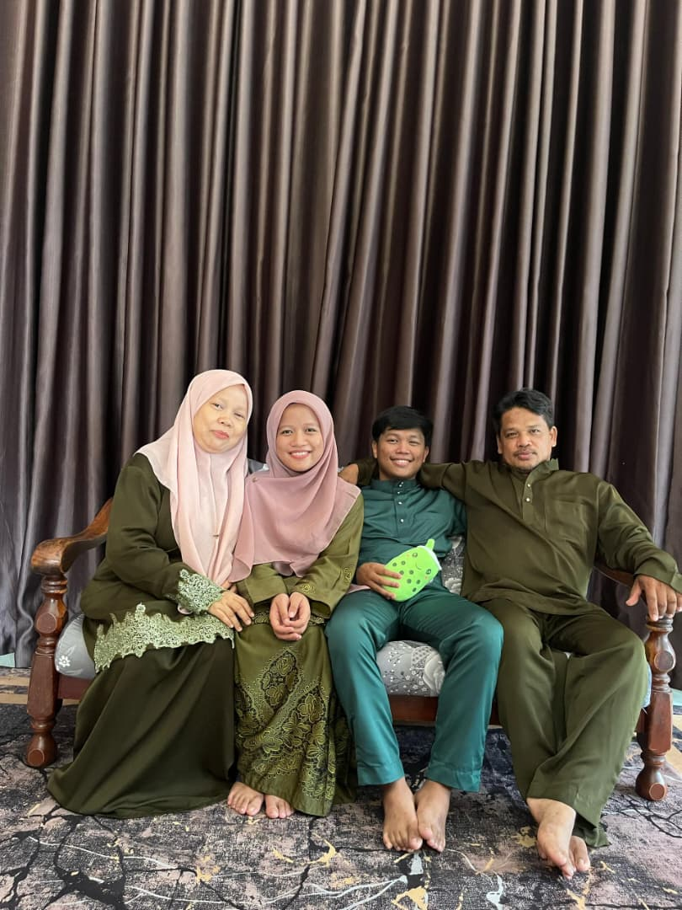
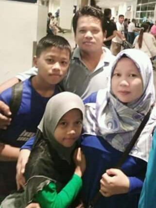

My beloved family

My beloved little sister

My beloved little family
|
BIODATA
| My name is Muhamad Arieq Ayassy bin Ariffin and I am 21 years old. I am the eldest of two siblings. I was born on June 6, 2005, in Kelantan,
but I was raised and have lived in Nilai, Negeri Sembilan, since I was a child. My father, Ariffin bin Che Rasid, is 52 years old, and my mother, Arnita binti Anwar, is 53 years old.
My younger sister, Nur Arieana Ramadhani binti Ariffin, is 18 years old.My father is a technician, while my mother is a full-time homemaker. My younger sibling just finished school and
is enjoying their free time. After completing my diploma, if I'm lucky, I will continue my studies to the next level.
I don't think it is possible to say my family is the most supportive
and loving one in the world, but for sure I owe them a lot, because they have been there for me from the day I was born until now when I am already an adult. Right at the beginning of my life,
they filled me with their love, care, and protection. They went through a lot of difficulties just to ensure that I would be brought up in a very pleasant and safe environment. They taught me the
very important virtues of respect, kindness, and responsibility, and these same traits started to influence my character as I grew up.
When I finally became a grown-up, I realized how much my family’s support actually mattered in my life. Their presence was felt during the tough times, and they were the very first ones to join me in
celebrating my achievements. Their steadfast backing is what energizes me and provides me with the confidence to confront life's hurdles. I do not only appreciate my family but also consider myself to be
in their debt forever for their love and support that, through me, have shaped the person I am today
In closing, family is an important treasure in my life. And not forgetting friends, educators, and those around me who have helped me understand the meaning of life. |
|